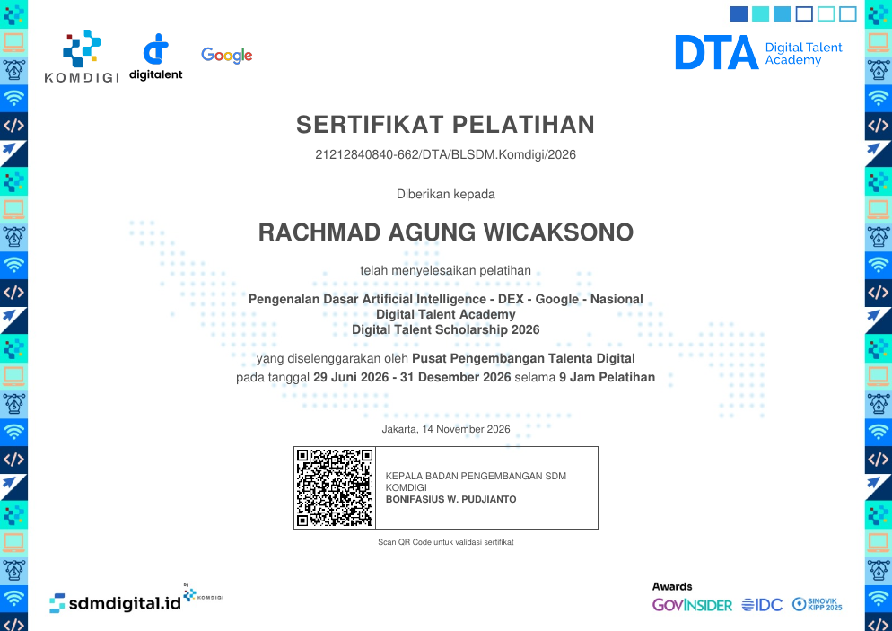
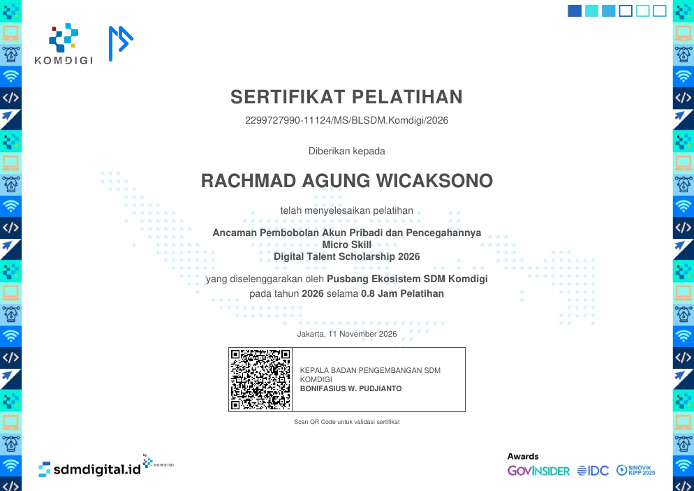
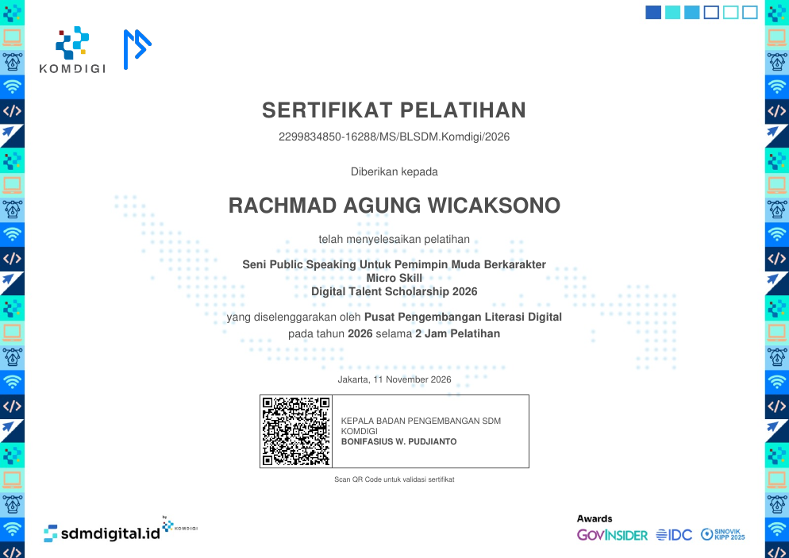
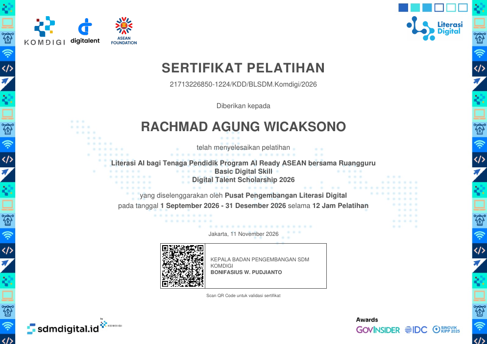

PENDIDIKAN TINGGI
Universitas PGRI Madiun (UNIPMA)
Fakultas Keguruan dan Ilmu Pendidikan (FKIP)
Program Studi: Pendidikan Biologi
Tahun kelulusan: 2020CURRICULUM VITAE · PORTOFOLIO PROFESIONAL
Profesional di bidang pendidikan dan manajemen administrasi.
Berkomitmen pada pengembangan kualitas pembelajaran, ketepatan administrasi, serta pengembangan sumber daya manusia.
01 / TENTANG SAYA
Profesional berpengalaman di bidang pendidikan dan manajemen administrasi dengan latar belakang akademik yang kuat.
Memiliki komitmen tinggi terhadap pengembangan kualitas pembelajaran, ketepatan administrasi, serta pengembangan sumber daya manusia.
02 / LATAR BELAKANG
Fakultas Keguruan dan Ilmu Pendidikan (FKIP)
Program Studi: Pendidikan Biologi
Tahun kelulusan: 202003 / PERJALANAN KARIER
Universitas PGRI Madiun (UNIPMA)
Mulai bekerja di Universitas PGRI Madiun pada tahun 2020.
04 / KAPABILITAS
Area keahlian yang tercantum dalam Curriculum Vitae.
Pengelolaan administrasi dan dukungan proses akademik.
Pengelolaan data institusi dan administrasi kepegawaian.
Dukungan terhadap kualitas pembelajaran dan kegiatan pendidikan.
Partisipasi dalam penulisan ilmiah dan kegiatan penelitian.
Koordinasi dan komunikasi internal secara profesional.
05 / BUKTI KOMPETENSI
Ruang dokumentasi sertifikat keahlian, kompetensi, pelatihan, dan penghargaan.

9 jam pelatihan · Digital Talent Academy · 14 November 2026
Lihat sertifikat PDF ↗31 jam pelatihan · Digital Talent Academy · 14 November 2026
Lihat sertifikat PDF ↗1 jam pelatihan · Micro Skill · 13 November 2026
Lihat sertifikat PDF ↗12,5 jam pelatihan · Digital Talent Academy · 13 November 2026
Lihat sertifikat PDF ↗11,5 jam pelatihan · Digital Talent Academy · 13 November 2026
Lihat sertifikat PDF ↗
0,8 jam pelatihan · Micro Skill · 11 November 2026
Lihat sertifikat PDF ↗1 jam pelatihan · Micro Skill · 11 November 2026
Lihat sertifikat PDF ↗
2 jam pelatihan · Micro Skill · 11 November 2026
Lihat sertifikat PDF ↗
12 jam pelatihan · Basic Digital Skill · 11 November 2026
Lihat sertifikat PDF ↗Pilih kartu untuk membuka dokumen sertifikat PDF. Dokumen ditampilkan sesuai file yang diberikan.
06 / PENGEMBANGAN KOMPETENSI
Bidang pembelajaran yang tercantum pada sertifikat pelatihan yang dilampirkan.
Pengenalan dasar AI, AI generatif, prompt, produktivitas, etika AI, privasi data, dan penggunaan AI yang bertanggung jawab.
Python, Math Practice with Python, Pandas, NumPy, Scikit-Learn, data scraping, eksplorasi data, data cleansing, dan data annotation.
Implementasi user interface, pemrograman terstruktur, penggunaan library/komponen, serta penulisan kode sesuai guidelines dan best practice.
Ancaman pembobolan akun, pencurian login, keamanan penggunaan cloud, dan pencegahan kejahatan siber.
Personal branding di media sosial, pembuatan konten, public speaking, dan komunikasi dengan audiens.
Daftar ini merangkum materi pelatihan pada sertifikat, bukan klaim lisensi profesi atau tingkat kemahiran yang belum diuji.
06 / TERHUBUNG
Untuk informasi profesional dan jejaring, silakan kunjungi profil LinkedIn.